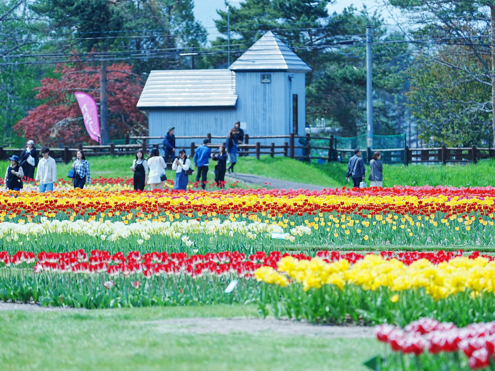
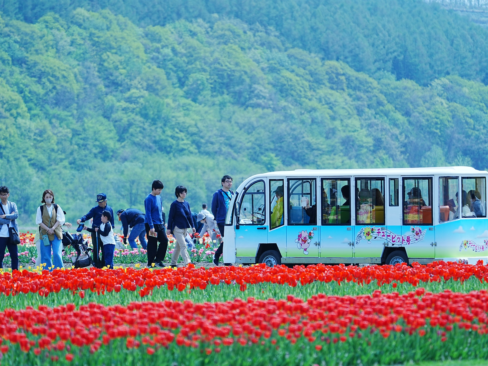
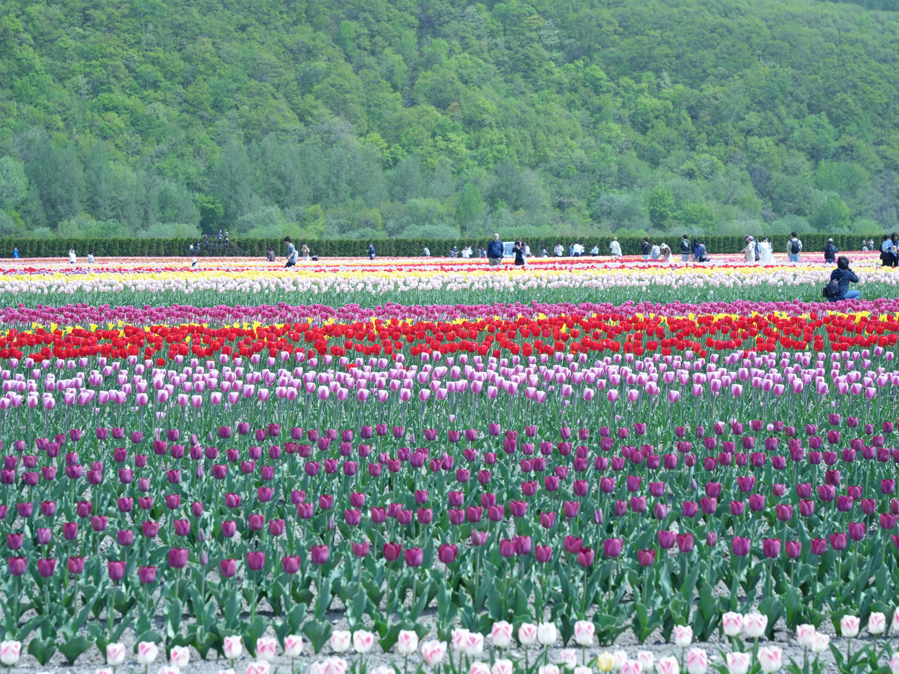
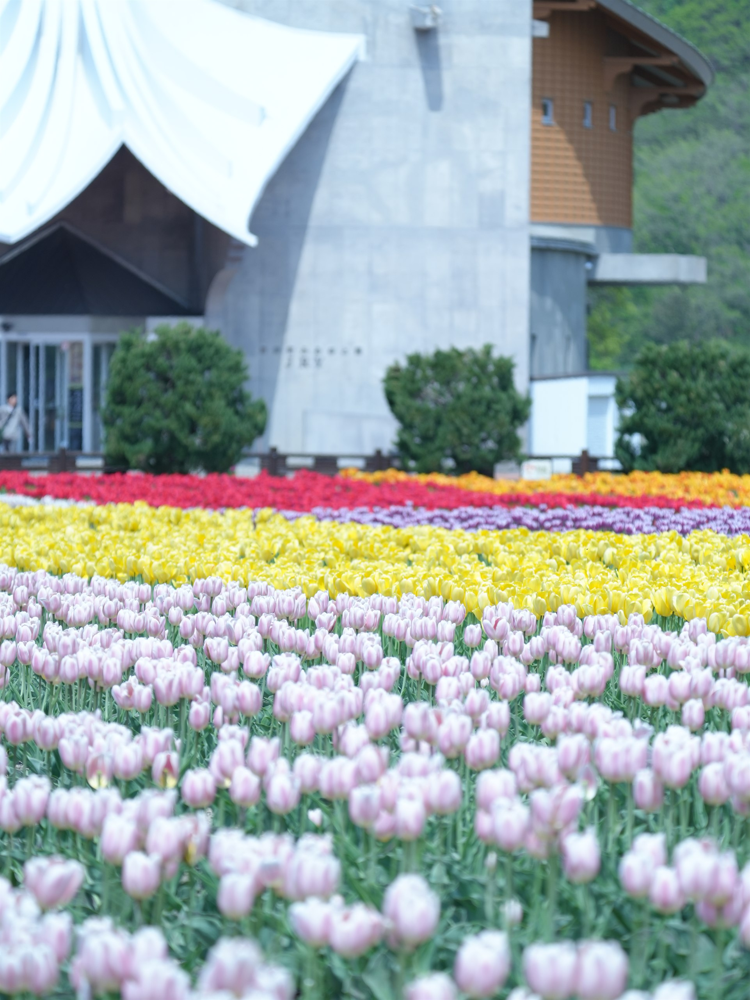
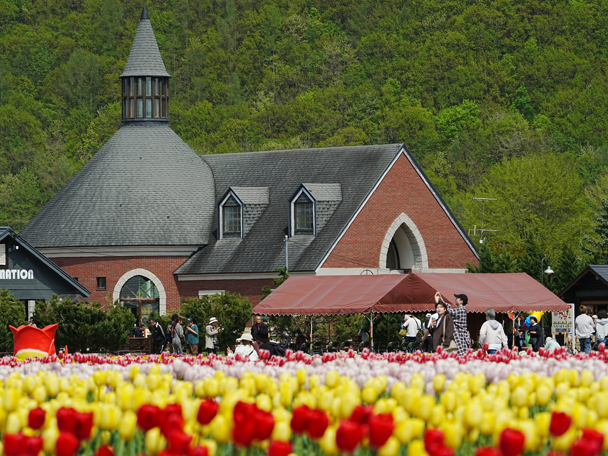
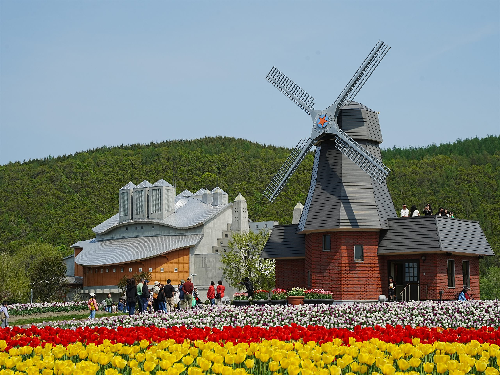

Exhibition Work
最高品質の銀塩写真プリント「クリスタル」の圧倒的な超光沢とクリアな奥行きによって再現された、風に揺られ重なり合うチューリップの淡い色彩。
アクリルを排除し作品そのものを引き立てるミニマルデザインと、アルミ複合板 ＋ 背面木枠（下駄）構造による立体的な浮かし展示が特徴です。春の生命力が光線とともに美しくほどけていく一瞬を、超望遠レンズによる圧倒的な描写力で切り取りました。
広大な大地を染め上げる、70万本のチューリップ。
本場オランダの色彩が、北海道の湧別町に息づく。
本写真展の舞台となったのは、オランダの伝統と文化を受け継ぐ「かみゆうべつチューリップ公園」。
東京ドーム約2.5個分に相当する広大な土地のうち、およそ7ヘクタールが色鮮やかなチューリップ畑で埋め尽くされます。
本場オランダから直輸入された希少な品種を含む、約200品種・70万本以上のチューリップが一斉に咲き誇るその景色は、まさに大自然が描き出す息をのむような美しいキャンバスです。
今回の展示では、例年5月中旬から下旬にかけて迎える「最も美しい見頃」の瞬間に焦点を当てました。風にほどける花弁、光り輝く水滴、風車が回る異国情緒豊かな風景など、一瞬の情景を鮮明に表現しています。
同じ湧別の光、同じ機材環境において、絞り値（F値）のコントロールのみで描き出された対照的な二つの世界。被写界深度を自在に操り、花々が放つ美しさを異なる切り口で引き出した技術と感性の調和を展示します。
※これらの2作品は「春展」での出展は行われませんが、F値のコントロールによる表現技法を示す参考作品（技術比較）として掲載しています。
絞りを開放値F2.8に設定することで、前後にとろけるようなボケを生み出し、可憐なチューリップの一輪を際立たせました。極限まで薄めたピント面が、花弁に残る静かな美しさをドラマチックに演出します。
超望遠600mmによる圧縮効果と、絞り値F10まで絞り込んだ被写界深度。手前の花から奥に広がる群生まで、すべてのチューリップを極めて鮮明かつシャープに解像。群生の持つ迫力と力強さを捉えています。






公園の中心に佇む、オランダの風車を忠実に模した展望台。最上階に登ると、幾何学的に配置された色鮮やかなチューリップ畑をパノラマビューで見渡すことができます。
本場オランダの木靴職人がポプラの木から削り出した、長さ225cm、重さ300kgの超巨大な木靴。定番の写真撮影スポットとなっており、オランダ伝統民族衣装の貸し出し体験も行われています。
公園入口から園内を約18分かけて優雅に一周する電動周遊バス。心地よい風を感じながら、歩くことなくのんびりと美しい景色を楽しめる人気の乗り物です（有料）。
専用の掘り取り畑から、気に入ったチューリップを球根ごとスコップで掘り起こして購入できる体験（1本100円程度）。おうちの庭や鉢植えでも湧別のチューリップを育てることができます。
チューリップの妖精「チューピット（兄）」と「リップちゃん（妹）」がお出迎え。フェア期間中の週末など、運が良ければ園内で出会って一緒に写真を撮ることができます。
Visual Journey from Sapporo to Yubetsu